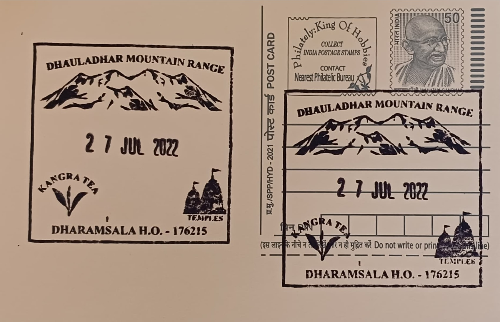

Dhauladhar Mountains, Kangra Tea & Temple
धौलाधार पहाड़, कांगड़ा चा अर मंदिर


The name Dhauladhar, from the Sanskrit-derived "dhaula" (white) and "dhar" (range or ridge), refers directly to the perpetual snow mantling its upper peaks, visible as a sharp white wall above the green Kangra valley for much of the year. The range forms the outermost and one of the most abrupt rises of the western Himalaya, climbing from valley floors near 1,000 metres to summits exceeding 5,000 metres within a remarkably short horizontal distance, with Hanuman Tibba, at 5,982 metres, its highest point. This sudden vertical gain, rare among lower Himalayan ranges accessible without long approach treks, is what has made the Dhauladhar a defining visual and geographical landmark of Kangra district since long before it entered colonial-era survey records.
Beyond its scenic identity, the Dhauladhar backdrop frames a valley of layered economic and religious importance. Kangra tea, cultivated on its lower slopes at elevations of roughly 900 to 1,400 metres, is one of India's lesser-known but historically significant tea varieties, prized for a light-bodied, musky flavour distinct from Assam or Darjeeling tea; it received Geographical Indication registration from the Indian government in 2005 and, later, recognition from the European Commission as well. Simultaneously, the valley has functioned for over a thousand years as a corridor of Hindu and Buddhist devotion, hosting shrines of both mainstream and tantric significance, which together with the tea estates and mountain scenery give Kangra a composite identity as an agricultural, spiritual, and trekking destination within a single geographic frame.
Tea cultivation in Kangra was formally established after Dr William Jameson, Superintendent of the Botanical Gardens at Saharanpur and Peshawar, surveyed the district in 1848 and judged its soil and elevation suitable for Camellia sinensis; the first commercial plantation followed in 1852 at Holta, near Palampur. Under British planters the industry expanded rapidly, covering close to 10,000 acres by the 1890s and earning a gold medal at a London exhibition in 1886, with exports reaching markets as far as Kabul, Central Asia, and continental Europe. The valley's temple architecture developed on an equally long timeline: the Baijnath temple, dedicated to Shiva in his healing form Vaidyanath, was constructed in 1204 CE by two local merchants, Ahuka and Manyuka, in the Nagara style, while the rock-cut Masroor temple complex, carved directly from a hillside roughly 40 kilometres from Kangra town, is dated to the 8th century CE and comprises fifteen monolithic shrines facing a rectangular water tank, drawing comparison to the rock-hewn caves of Ajanta and Ellora.
A single catastrophic event reshaped the tea industry's trajectory: the Kangra earthquake of 4 April 1905, measured at roughly magnitude 7.8, destroyed the British-built factories and their imported processing machinery across the valley. Rather than rebuild, most European planters abandoned their estates in the aftermath, handing them to local workers and traders, and the industry never regained its pre-1905 export scale, surviving instead as a network of smaller, locally run gardens. The region's religious landscape saw no comparable single rupture but instead layered additions over centuries, most prominently the Jwalamukhi temple roughly 55 kilometres from Dharamsala, where natural gas vents sustain a set of continuously burning flames venerated as a direct manifestation of the goddess and counted among the 52 Shakti Peethas of the subcontinent.
Present-day Kangra tea production remains concentrated around Palampur and is supported by the Tea Board of India's regional office and by state horticulture department schemes aimed at reviving smallholder cultivation, even as total acreage remains far below its nineteenth-century peak. The Dhauladhar range itself continues to anchor Himachal Pradesh's trekking economy, with Triund, at about 2,850 metres, serving as its most frequented day-trek destination and gateway to higher passes such as Indrahar. Tea gardens, centuries-old temples, and a glaciated skyline thus persist as three distinct but geographically overlapping draws for visitors arriving through Dharamsala, each maintained today by a different custodian, whether planters' cooperatives, temple trusts, or the forest department's trekking infrastructure.
| Date of Introduction | August 10, 2020 |
|---|---|
| Address | Senior Postmaster, |
| Dharamsala HO, | |
| Kangra (dt.), Himachal Pradesh - 176215. |